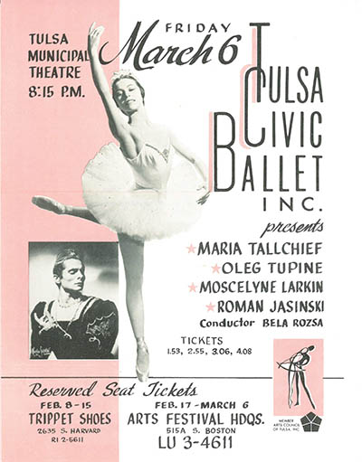

Moon phases
How the ‘Oklahoma Indian Ballerinas’ gave the United States a regional tradition

Yvonne Chouteu, Rosella Hightower, Moscelyne Larkin, Maria Tallchief, Marjorie Tallchief
Archive photos courtesy Tulsa Ballet
For all the public depictions of the world-famous Native American women who created regional ballet in the United States, the monumental dance they performed together in 1967 remains unseen by anyone who wasn’t there. Complete footage of “The Four Moons” does not exist. The work was a covenant between the ballerinas, the Russian-born art form they mastered, and the ritual dances of their ancestors. It was planned to crown the second Oklahoma Indian Ballerina Festival.
 One can’t brush by the history of ballet without meeting the names of Maria Tallchief and her sister Marjorie, of Osage descent; Yvonne Chouteau, of the Shawnee tribe on the Cherokee Nation rolls; Rosella Hightower, whose heritage is Choctaw; and Moscelyne Larkin, of Eastern Shawnee-Peoria descent. Their stories glimmer through the most prestigious halls of dance. Hit after hit.
One can’t brush by the history of ballet without meeting the names of Maria Tallchief and her sister Marjorie, of Osage descent; Yvonne Chouteau, of the Shawnee tribe on the Cherokee Nation rolls; Rosella Hightower, whose heritage is Choctaw; and Moscelyne Larkin, of Eastern Shawnee-Peoria descent. Their stories glimmer through the most prestigious halls of dance. Hit after hit.
Once, when Alicia Markova got sick before a performance of “Giselle” in 1947, Hightower was called in to perform the lead role. She left a party with five hours to learn the choreography. The curtain rose; Hightower and Antol Dolin brought the audience to its feet. New York Times writer John Martin watched one more night and christened Hightower “the newest star on the ballet horizon” in his review.
Maria Tallchief was the original superstar of the New York City Ballet under its founder George Balanchine, whom she later married. Yvonne Choteau became the youngest member of The Ballet Russe de Monte Carlo in 1943. She was 14 years old.
Almost a quarter century later, these dancers who made history at the likes of the Metropolitan Opera House met with coordinators at a McDonald’s in Stroud to prepare for their reunion in “The Four Moons.” Quapaw-Cherokee composer Louis Ballard would score the piece, and there would be a solo for each of the women’s tribes. Marjorie Tallchief would dance the Osage part for herself and her sister Maria, who had already retired.
Connections among the festival’s participants exist in family and art. It is possible Ballard and Larkin crossed paths unbeknownst when she was young. He was born in a Native American community called Devil’s Promenade near the town of Quapaw, which was where Larkin’s father took her for pow-wows on the Fourth of July. Choteau and Larkin found out they shared a great-grandmother: Maria Silverheels, of course.
How to begin: The Five Moons are dancers. “The Four Moons” is a dance. The full moon, above everything, keeps time.
[1]
Professional ballet in Tulsa took root as a baby class. The girls, as young as four and as old as six, wore pink leotards. Cheryl Forrest had taken just a few of these classes from Miss Eva Matlagova-Larkin when her teacher’s daughter took over.
“I had a beautiful young teacher today. Her name was Miss Moussie,” Forrest remembers coming home to report. “And my mother looked at me and said, ‘I didn’t know they were back from tour.’”
It was 1956. Moscelyne Larkin and Roman Jasinski, two of the most famous ballet dancers in the world, arrived with their toddler son to found what would become the Tulsa Ballet and adjacent school. They joined forces with Moscelyne’s mother, Eva. For the first time, students could get top-tier professional training without leaving the city. Girls like Cheryl Forrest might grow up to dance in their hometown company, return to the board, and become president. She did that.
Only one other dancer hit all those marks in Tulsa: Georgia Snoke. The two women are now the matriarchs-apparent of Tulsa Ballet.
A number of their contemporaries went on to dance in major companies throughout the United States and Europe after being trained for many years by the Jasinskis. Former dancers are now teachers throughout America, sharing talents honed by their early training.
"We who were in Tulsa Civic Ballet before it became Tulsa Ballet had first to learn everything about being on stage," Snoke says. "At the same time, the Jasinskis learned from us how best to bring latent talents to fruition. They had only dealt with professionals before coming to Tulsa.”
Forrest and Snoke lived briefly in other cities over the years for school and work.
“When I was first pregnant and living out in Southern California, I decided to take a master class,” Snoke says. “It happened to’ve been somebody who’d been with the Jasinskis in the Ballet Russes. I’m just at the barre, and [the teacher] comes over to me and says, ‘Where have you studied?’ She had immediately noticed the ‘Ballet Russe’ arms, the tilt of the head, the careful placement of the body. When I responded ‘the Jasinskis’ she exclaimed, ‘That explains it!'”
The story of Tulsa Ballet’s founding is a song these two know by heart. Forrest and Snoke perform banter over a carefully-assembled stack of archival photos and newspaper stories, in a small library toward the back of the Tulsa Ballet building. Down the hall, timeline panels they made for the Tulsa Ballet’s 60th anniversary tower over dancers, their blocks of sacred historical text reflected in the studio mirror. Forrest gets up in her sneakers and blazer to flip through the mock-ups in the corner on foam boards. Masks from a stage production of “Paganini”—the only complete set of props and costumes from this ballet in existence, Forrest says—watch from a high shelf.
 From this home base, the collaborators mapped the history of ballet at libraries and headquarters in London, Paris, and New York City. At an Embassy Suites back in Tulsa, Forrest and Snoke took art off the walls to make room for the notes. When versions of the stories Jasinski told didn’t agree, Forrest and Snoke wove them into a mostly first-person narrative, taking great care to honor their teacher’s poetry of mingled languages. “Roman Jasinski: A Gypsy Prince from the Ballet Russe” was published in 2008. The term “gypsy” was used widely in the ballet community in reference to dancers who traveled from company to company, working where they could.
From this home base, the collaborators mapped the history of ballet at libraries and headquarters in London, Paris, and New York City. At an Embassy Suites back in Tulsa, Forrest and Snoke took art off the walls to make room for the notes. When versions of the stories Jasinski told didn’t agree, Forrest and Snoke wove them into a mostly first-person narrative, taking great care to honor their teacher’s poetry of mingled languages. “Roman Jasinski: A Gypsy Prince from the Ballet Russe” was published in 2008. The term “gypsy” was used widely in the ballet community in reference to dancers who traveled from company to company, working where they could.
Moscelyne survived Roman. She had her own stories to tell. Her Native American and Russian heritage framed her part in the canon as both supremely “American” and exquisitely built for ballet. Those two were not mutually exclusive, her young students came to learn.
Snoke, a close friend of the couple, listened to Moscelyne’s adventures for long hours and bound her oral history in a limited run. When Moscelyne died in 2012, her friends scripted a memorial service like an elegant TV special with cues to archival video and photographs. Snoke, a trained journalist, sent me that program ahead of our meeting; when I mention to Forrest how comprehensive an introduction it is, her eyes well up.
Snoke excuses herself to help little Maries learn their parts for an upcoming performance of “The Nutcracker.” Forrest stays, still flush with stories after leading a two-hour tour. She tells me about the difficulty Jasinski found in teaching American dancers to emote in their roles onstage. They were not dancing for food the way he had in Poland. They had not, like Moscelyne’s Russian mother and Forrest’s first ballet teacher, kept their feet warm in cow dung during the winter.
Roman Jasinski danced like his life depended on winning the audience, because it did. Wherever successful ballet dancers came from, they acquired a pedigree of discipline and association. Their bodies carried a hard-won language descendant from need—if not a need for safety and survival, then a need to communicate. Every movement required the assurance of memory.
I ask Forrest to describe the routine arms for barre work that gave away Tulsa dancers as Ballet Russes exports. How do they look different on dancers trained under Moscylene Larkin and Roman Jasinski? The hand curves like what? The shoulder falls like how?
Forrest thinks for a moment. She moves her chair a little, making room to stand once more.
“I can’t tell you, but I can show you.”
[2]
Lift your cheek as though to be kissed. This is how Michel Fokine taught dancers to cock their heads in “Les Sylphides.” Moscelyne Larkin, one of his favorites, reminded Snoke for her oral history.
Legendary New York choreographer George Balanchine loved Moscylene and her husband, too. Roman Jasinski was known as “Jasha” to his closest family and friends.
“We could have settled in bigger cities than Tulsa,” Larkin told Snoke. “Balanchine always wanted Jasha, but we started in Tulsa, building on what mother already had.”
 The first generation of professional ballet dancers was retiring from the stage when Moscelyne Larkin came back to Oklahoma in 1956. For ambitious ballerinas in the United States, the plan was still, essentially, New York City or nothing.
The first generation of professional ballet dancers was retiring from the stage when Moscelyne Larkin came back to Oklahoma in 1956. For ambitious ballerinas in the United States, the plan was still, essentially, New York City or nothing.
That’s the path Larkin had taken as a young teenager in the late 1930s. Her mother sent her to New York City to train under ballet masters like Mikhail Mordkin, once a director of the Bolshoi Ballet. There was nothing about Moscelyne—an outsider from Miami, Oklahoma—that did not draw attention: her spirited leaps and effervescent performances, an exacting memory for choreography, the dark hair and striking browline she shared with her Shawnee-Peoria father. Classmates teased her for being the smallest. Mordkin shut them up.
“She is like a little fish now, but she is going to grow up into a very big fish and she is going to eat all of you up,” he said.
Moscelyne was headed for the most prestigious appointment in ballet. She would spend the years of World War II traveling with the Ballet Russe de Monte Carlo. Moscelyne remembered a Brazilian critic suggesting that she lead the American troops. If you put her at the head of the soldiers, he ventured, the war would come to an end.
[3]
Forrest and Snoke take me through the back rooms of their memory palace: a warehouse space at the Tulsa Ballet building, where piles of clues will submit to the archivists.
“Cheryl is going through all of the old photos,” Snoke explains. “Currently I’m on page 180 at 10-point font, putting down what was danced when and by whom in 1958, in 1973. This why I’m anxious to get into those last 40 boxes.”
“Don’t say that in front of me,” Forrest laughs.
They’ll color code the productions according to who was artistic director when each ballet was performed. Some of the shows Tulsa Ballet staged would be otherwise lost to the world.
The company surprised critics and audiences when with a revival of “Mozart Violin Concerto” in 1988. Balanchine choreographed the particularly dreamy ballet more than 40 years prior in Argentina. Like some of his other works, it had never been performed in the United States Roman Jasinski senior danced in the original production and was able to recreate it with assistance from an Argentine ballerina. Roman Larkin Jasinksi, son of Tulsa Ballet’s founders, danced in the revival—just one example of the full-circle tradition nurtured by his parents.
“We are a Ballet Russe company, and that means we do the classics. We perform the Ballet Russe warhorses like ‘Gaîté Parisienne,’ which is in our repertoire, and we do contemporary works,” Forrest explains.
“Which of course is what the Ballet Russe did,” Snoke says. “What was then contemporary is now an old warhorse.”
Institutional memory is how a ballet keeps its life. The advent of video has not changed that, Forrest insists. Footage does not convey the feelings one absorbs from seeing dance performed in person.
There’s a reason Forrest believes this with such conviction. Tulsa Ballet dancers and students under the direction of Moscelyne Larkin and Roman Jasinski were on the same stage with the most spectacular ballet dancers in the world, because of the couple’s connections.
“That was the biggest discussion when we would reconvene in September,” Forrest says. “‘Who’s coming this year?’”
“We grew up thinking this was normal,” Snoke says.
“Years later, I was the ballet mistress in a company in Virginia, and there was this girl. ‘Ms. Forrest,’ she said, ‘I saw Edward Vilella at the Kennedy Center this weekend.’ And I said, ‘You did?’ Now, she was from Washington D.C., and I was from Oklahoma. And she said, ‘Have you ever seen him dance?’ And I looked at her and I said, ‘Not from the front.’”
[4]
Just as the East Coast came to Tulsa Ballet, the company and the larger Oklahoma dance community has sent original productions to New York and D.C. Some of them call back directly to the Oklahoma Indian Ballerinas and their legacy.
“The Four Moons” itself has seen revivals and adaptations, but they are more homages to the dancers and the concept than restaged versions. The official attempt came in 1982. Tulsa Ballet Theater set out to channel the original choreography with four dancers as originally performed. They had the help of witnesses. And the four ballerinas who danced it—Marjorie Tallchief represented herself and Maria—were present to watch.
Encore Performing Society in Tahlequah brought a reimagined ensemble version of “The Four Moons” to the Smithsonian’s Cherokee Days in April. The majority of the dancers in Encore are members of the Cherokee Nation. Lena Gladkova-Huffman choreographed and directs the production; she moved from Russia to the United States in 2007. Acquiring rights to the music from Ballard’s estate was important to her.
“Any kind of dancing is first and foremost about a dancer’s identity,” Gladkova-Huffman says. “So I want them to remember where they came from, what the history of their own people entails, be familiar with it, and then, what the history of the art they chose to be passionate about is—the history of ballet, in our case.”
The original part representing the Osage tribe was created by George Skibine, husband of Marjorie Tallchief, who danced it. The husbands of Larkin and Choteau choreographed their parts—the Shawnee and the Cherokee sections. Hightower choreographed the Choctaw solo for herself. It is often thought the sections are meant specifically to reference the tribes, although the moves were based also on each dancer’s particular abilities. (Larkin told Snoke for her oral history that Jasinski’s effusive homage to the dancer’s famous hops and leaps left her feet ravaged.)
Attention to each ballerina’s individuality can be seen, too, in the series of bronze sculptures called “The Five Moons” by Oklahoma artist Gary Henson. The depictions, unveiled on the west lawn of the Tulsa Historical Society in 2007, were based on photographs each Moon chose from her favorite work.
 Other Oklahoma productions sprang from The Five Moons’ influence. A ballet called “Wazhazhe” was created by Randy Tinker Smith and his Osage Ballet. Elders Louis Burns, Leonard Maker and the late Harry Red Eagle Junior contributed to research, and Roman L. Jasinski served as artistic advisor. This production, meant specifically to tell the story of the Osage people, also appeared at the Smithsonian.
Other Oklahoma productions sprang from The Five Moons’ influence. A ballet called “Wazhazhe” was created by Randy Tinker Smith and his Osage Ballet. Elders Louis Burns, Leonard Maker and the late Harry Red Eagle Junior contributed to research, and Roman L. Jasinski served as artistic advisor. This production, meant specifically to tell the story of the Osage people, also appeared at the Smithsonian.
“If it weren't for Maria and Marjorie Tallchief, I don't believe we would have been inspired to write that ballet,” Tinker says.
Likenesses of the five ballerinas, too, grace the rotunda of the Oklahoma State Capitol in Mike Larsen’s mural, “Flight of Spirit.” With the Trail of Tears imaged in the background and the dancers under a spotlight’s haze in the fore, it is a sober witness for the state’s relationship to these artists who brought Oklahoma, and the United States, so much renown. Here in the capitol building The Five Moons watch over the machinations of power that shape life in Oklahoma.
There appear tiny ballerinas between these two eras depicted in the painting, at the corners of what looks like a stage. They could be The Five Moons training when they are small, in a linear read. Or they could represent their countless students, the legacy of education and training left by Chouteau and her husband, who founded what’s now known as the Oklahoma City Ballet and established the first fully-accredited dance department in the United States at the University of Oklahoma.
Hightower mothered a dance school in Cannes. The Tallchief sisters opened the Chicago City Ballet. And, of course, Moscelyne Larkin Jasinksi, with her husband and lifetime dance partner Roman Jasinski, founded what is now the Tulsa Ballet, a force of preservation and new work.
[5]
It’s crowded at Brookside Diner before “Nutcracker” rehearsals begin at Tulsa Ballet around the corner. A teenaged server chats with regulars at the bar while she rolls silverware without looking down at the napkins and forks, something she’s learned to do after six months’ practice. The spot hides Tulsa Ballet from the street. There’s a sign with an arrow to point people behind the restaurant.
Visitors know they’ve arrived when they see the logo on the facade of the building. “Tulsa Ballet” is in rounded, lowercase script, the words ensconced in what looks like a thin crescent moon, or the silhouette of an eclipse. I’m told later the white shape is meant to look like the halo of a spotlight. There are those who will always look at the entrance and see both.
.jpg)
.jpg)